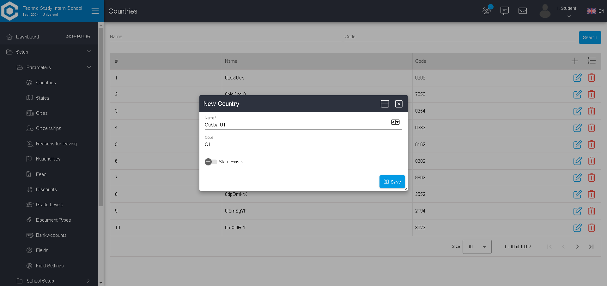

-
Country Functionality
10:03:46 PM / 00:00:09:635 Fail
Country Functionality
09.25.2023 10:03:46 PM 09.25.2023 10:03:56 PM 00:00:09:635 · #test-id=2FailCreate a countryGiven Navigate to CampusWhen Enter username and password and click login buttonThen User should login successfullyStep skippedAnd Navigate to countryStep skippedWhen Create a countryStep skippedThen Success message should be displayedStep skippedStepDefinitions.Hooks.after(io.cucumber.java.Scenario)screenshot name -
Country Functionality
10:03:46 PM / 00:00:13:816 Fail
Country Functionality
09.25.2023 10:03:46 PM 09.25.2023 10:04:00 PM 00:00:13:816 · #test-id=1FailCreate a countryGiven Navigate to CampusWhen Enter username and password and click login buttonThen User should login successfullyAnd Navigate to countryStep skippedWhen Create a countryStep skippedThen Success message should be displayedStep skippedStepDefinitions.Hooks.after(io.cucumber.java.Scenario)screenshot name
-
Country Multi Scenario
10:03:56 PM / 00:00:45:566 Fail
Country Multi Scenario
09.25.2023 10:03:56 PM 09.25.2023 10:04:42 PM 00:00:45:566 · #test-id=17FailCreate countryGiven Navigate to CampusWhen Enter username and password and click login buttonThen User should login successfullyStep skippedAnd Navigate to countryStep skippedWhen Create a countryStep skippedThen Success message should be displayedStep skippedStepDefinitions.Hooks.after(io.cucumber.java.Scenario)screenshot nameFailCreate countryGiven Navigate to CampusWhen Enter username and password and click login buttonThen User should login successfullyStep skippedAnd Navigate to countryStep skippedWhen Create a countryStep skippedThen Success message should be displayedStep skippedStepDefinitions.Hooks.after(io.cucumber.java.Scenario)screenshot nameFailCreate country 2Given Navigate to CampusWhen Enter username and password and click login buttonThen User should login successfullyAnd Navigate to countryStep skippedWhen Create a country name as "CabbarU1" code as "C1"Step skippedThen Success message should be displayedStep skippedStepDefinitions.Hooks.after(io.cucumber.java.Scenario)FailCreate country 2Given Navigate to CampusWhen Enter username and password and click login buttonThen User should login successfullyAnd Navigate to countryWhen Create a country name as "CabbarU1" code as "C1"Then Success message should be displayedStepDefinitions.Hooks.after(io.cucumber.java.Scenario)screenshot name
-
org.openqa.selenium.remote.UnreachableBrowserException
3 tests
org.openqa.selenium.remote.UnreachableBrowserException
3 failedStatus Timestamp TestName Fail 22:03:59 PM When Enter username and password and click login button Country Multi Scenario.Create country.When Enter username and password and click login buttonFail 22:04:09 PM Then User should login successfully Country Multi Scenario.Create country 2.Then User should login successfullyFail 22:04:10 PM StepDefinitions.Hooks.after(io.cucumber.java.Scenario) Country Multi Scenario.Create country 2.StepDefinitions.Hooks.after(io.cucumber.java.Scenario) -
org.openqa.selenium.NoSuchElementException
1 tests
org.openqa.selenium.NoSuchElementException
1 failedStatus Timestamp TestName Fail 22:03:52 PM When Enter username and password and click login button Country Functionality.Create a country.When Enter username and password and click login button -
org.openqa.selenium.NoSuchSessionException
2 tests
org.openqa.selenium.NoSuchSessionException
2 failedStatus Timestamp TestName Fail 22:03:54 PM Then User should login successfully Country Functionality.Create a country.Then User should login successfullyFail 22:04:03 PM When Enter username and password and click login button Country Multi Scenario.Create country.When Enter username and password and click login button -
org.openqa.selenium.TimeoutException
1 tests
org.openqa.selenium.TimeoutException
1 failedStatus Timestamp TestName Fail 22:04:19 PM Then Success message should be displayed Country Multi Scenario.Create country 2.Then Success message should be displayed
-
@Regression
6 tests
@Regression
6 failedStatus Timestamp TestName Fail 22:03:46 PM Create a country Country Functionality.Create a countryFail 22:03:46 PM Create a country Country Functionality.Create a countryFail 22:03:56 PM Create country Country Multi Scenario.Create countryFail 22:04:00 PM Create country Country Multi Scenario.Create countryFail 22:04:04 PM Create country 2 Country Multi Scenario.Create country 2Fail 22:04:10 PM Create country 2 Country Multi Scenario.Create country 2 -
@SmokeTest
2 tests
@SmokeTest
2 failedStatus Timestamp TestName Fail 22:03:46 PM Create a country Country Functionality.Create a countryFail 22:03:46 PM Create a country Country Functionality.Create a country
Started
Sep 25, 2023 10:03:46 PM
Ended
Sep 25, 2023 10:04:42 PM
Features Passed
0
Features Failed
3
Features
Scenarios
Steps
Timeline
Tags
| Name | Passed | Failed | Skipped | Others | Passed % |
|---|---|---|---|---|---|
| @Regression | 0 | 6 | 0 | 0 | 0% |
| @SmokeTest | 0 | 2 | 0 | 0 | 0% |
System/Environment
| Name | Value |
|---|---|
| Windows User Name | user |
| Time Zone | Europe/Istanbul |
| User Name | Umit Boyraz |
| Application Name | Campus |
| Operating System Info | Windows 10 |
| Department | QA |
| Ek Satýr | Aciklama |
| Ek Satýr | Aciklama |
| Ek Satýr | Aciklama |
| Ek Satýr | Aciklama |
| Windows User Name | user |
| Time Zone | Europe/Istanbul |
| User Name | Umit Boyraz |
| Application Name | Campus |
| Operating System Info | Windows 10 |
| Department | QA |
| Ek Satýr | Aciklama |
| Ek Satýr | Aciklama |
| Ek Satýr | Aciklama |
| Ek Satýr | Aciklama |